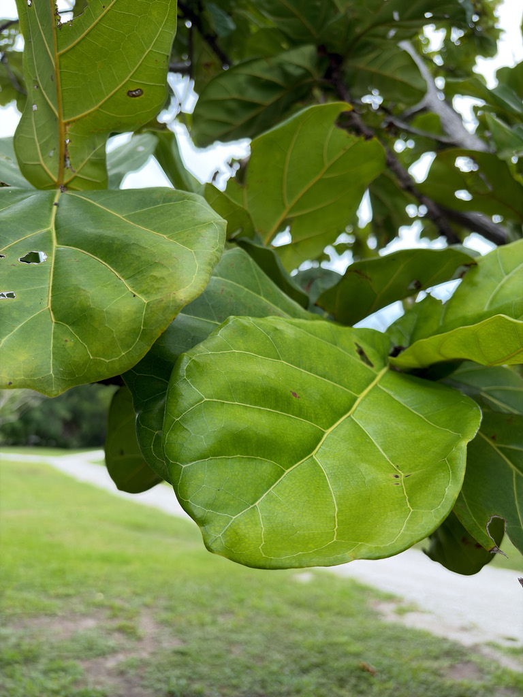

- A fig has no visible flower. What looks like the fruit is actually a hollow, inside-out flower cluster — the tiny blooms are hidden inside the fig itself, accessible only through a small pore at the tip.
- In its native West Africa, a single species of fig wasp crawls through that pore, pollinates the flowers, and lays its eggs — completing a relationship so tight that neither partner can reproduce without the other.
- The leaves can reach 15 inches long and 10 inches wide — roughly the size of a dinner platter — making this one of the broadest-leafed trees you are likely to encounter outside a tropical greenhouse.
- That Instagram-famous houseplant and this outdoor tree are the same species. Indoors it stays compact and almost never flowers or fruits; put it in a warm Florida yard and it can eventually top 25 feet.
- Outdoors in Florida the milky white sap that oozes from a broken stem or leaf can cause a skin rash on contact — worth knowing before you prune.
Ficus lyrata is native to the lowland tropical rainforests of West and Central Africa, from Sierra Leone east through Cameroon, Gabon, and into Nigeria. It grows naturally in moist, humid forest where rainfall is generous and temperatures rarely dip.
It arrived in Florida strictly as an ornamental. Landscape use here dates at least to mid-20th-century subtropical gardening; the explosion of the plant as a coveted houseplant during the 2010s drove renewed outdoor planting across South and Central Florida, where the climate is warm enough for it to grow into a genuine shade tree.
- What looks like the fruit of a fiddle-leaf fig is technically a syconium — a fleshy, hollow receptacle with all the tiny flowers tucked inside. There is no visible bloom, no open flower to visit. The only way in is a pinhole opening at the tip, called the ostiole, sized precisely for a single species of fig wasp (Agaon spatulatum). The wasp enters, pollinates the flowers, and lays her eggs inside.
- Without that specific wasp, the tree cannot set viable seed — which is why outdoor specimens in Florida almost never produce fruit, and why this tree poses essentially no naturalization or invasive risk here.
- The leaves are among the most architecturally striking of any tree grown in Florida. Each one is broadly obovate with a pinched waist that gives it the outline of a fiddle or lyre — the basis of both common and scientific names (lyrata, from the Latin for lyre-shaped). A mature leaf can reach 15 inches long and is noticeably thick and leathery, with deeply impressed veins on the upper surface.
- In its native African forest, F. lyrata is a free-standing canopy tree that can eventually reach 40 feet or more. In Florida landscapes most specimens stay in the 15 to 25-foot range, though the trunk can grow impressively thick over time.
- UF/IFAS notes that larger trees can develop tight branch crotches with embedded bark, which may split in high winds — early corrective pruning and a sheltered courtyard or wind-protected site extend the life of the tree considerably.
In its native West African habitat, the ripening figs — once the fig wasp has done its work — attract birds, bats, and small mammals that feed on the fruit and disperse seeds through the forest. Ficus fruits broadly are among the most important keystone food resources in tropical ecosystems, supporting an outsized share of frugivorous vertebrates during lean seasons.
In Florida cultivation, fruiting almost never occurs because the specific pollinating wasp (Agaon spatulatum) is not present here. The tree therefore provides structural and shade value in the garden but relatively limited direct wildlife food value compared with native figs such as Ficus aurea, which do fruit reliably in Florida and support local birds and wildlife.
Pollinated exclusively by a single species of fig wasp (Agaon spatulatum) in its native African range. The wasp enters the syconium through a tiny pore at the tip, pollinates the enclosed flowers, and lays eggs inside. Without this wasp, viable seed cannot form — fruiting is therefore almost unknown on Florida-grown specimens.
The syconium (the structure commonly called the fig) is globose, about 0.5 to 1.25 inches in diameter, green with pale flecks when young, turning reddish at maturity. Fruits appear singly or in pairs at leaf axils. Rarely produced in cultivation outside the native range.
Alternate, simple, broadly obovate with a characteristic narrowed waist that creates the fiddle or lyre outline. Blades 8 to 15 inches long and up to 10 inches wide, thick and leathery, dull green above with pale prominent veins, paler below.
Typically a single trunk, scarcely branched when young, becoming more spreading with age. Broken stems and cut leaves exude a milky white sap. Bark is brown and flaky on young trees, becoming gray and smooth with age.
Reproduced in the nursery trade by stem cuttings, air layering, or division — not by seed in most settings outside Africa.
The leaves stop you first — enormous, leathery, and pinched in the middle like a fiddle, with deeply impressed pale veins. Look for small round figs tucked at the leaf axils if the tree is mature and conditions are right, though fruiting here is uncommon. Snap a small twig and a milky white sap will bead up quickly at the break — a reliable field ID for the whole Ficus genus.
Bark on young stems is brown and flaky; on older trunks it smooths out to gray.
The milky white sap that oozes from cut stems or damaged leaves is a skin irritant — it can cause contact dermatitis and, in sensitive individuals, blistering. Gloves are a good idea any time you prune or handle cut material. If sap contacts skin, wash it off promptly.
The sap and all parts of the plant are mildly toxic if ingested by people, dogs, or cats. Symptoms are typically oral irritation, drooling, and gastrointestinal upset; serious illness is uncommon, but keep pets away from the plant and contact a vet if a pet chews on leaves or stems. The figs produced by this tree are not the edible common fig and should not be eaten.
UF/IFAS (ENH413/ST254) recommends siting this tree in a wind-protected location such as a courtyard, as larger specimens can develop tight branch crotches prone to splitting in strong winds. Early corrective pruning reduces that risk.
The species received the Royal Horticultural Society's Award of Garden Merit. It is listed as introduced (not naturalized) in the United States by the NC Extension Gardener Plant Toolbox, consistent with its absent fig-wasp pollinator and negligible naturalization risk in Florida.


- © Ruby Meador (CC-BY-NC), via iNaturalist
- © Randall Carter (CC-BY-NC), via iNaturalist